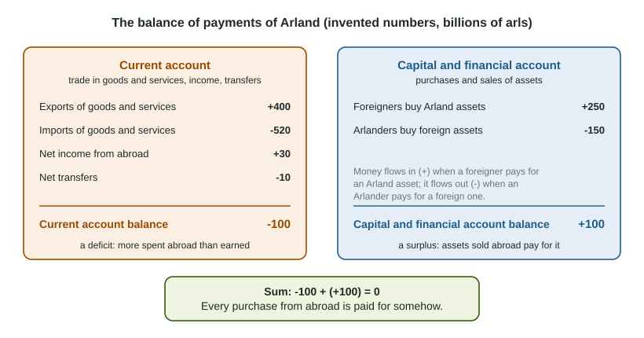

When you buy a jacket made in Vietnam, money leaves the United States. When a hospital in Germany buys software from a company in Texas, money comes in. When a pension fund in Canada buys a US government bond, money comes in too, but this time for an asset, not a product. A country keeps one record of all these payments with the rest of the world: the balance of payments.
Credits and debits
The balance of payments covers a period, usually a year, and records every transaction between the country's residents (people, firms and the government) and everyone else. Each entry gets a sign:
- A credit (+) is any transaction that brings money into the country: an export, interest earned abroad, a foreigner buying a domestic asset.
- A debit (-) is any transaction that sends money out: an import, interest paid to foreigners, a resident buying a foreign asset.
Ask one question for every entry: does money come in or go out? That settles the sign.
The current account
The current account records transactions in goods, services, income and gifts. It has three parts:
- The balance of trade in goods and services: exports minus imports. This is net exports, the X - M you met in GDP. Services count: tourists paying for hotels abroad are imports of services, and foreign students paying tuition here are exports of services.
- Net income from abroad: interest, dividends and wages earned abroad by residents, minus those paid to foreigners. The bond itself is an asset; the interest it pays is income.
- Net transfers: gifts with nothing bought in return, such as money a worker sends home to family, or foreign aid.
A negative current account balance is a current account deficit: the country spent more abroad than it earned there.
The capital and financial account
The capital and financial account (CFA) records purchases and sales of assets: government and company bonds, stocks, bank deposits, real estate, and whole firms or factories. When a foreigner buys a domestic asset, money flows in, so it is a credit. When a resident buys a foreign asset, money flows out, a debit.

| Current account | Capital and financial account | |
|---|---|---|
| What it records | Trade in goods and services, income, transfers | Purchases and sales of assets |
| A credit (+) | An export; interest or wages earned abroad; a gift received | A foreigner buys a domestic bond, stock, building or firm |
| A debit (-) | An import; interest paid to foreigners; money sent abroad | A resident buys a foreign bond, stock, building or firm |
Why the two accounts sum to zero
Think about one country as a household. If it spends more than it earns, it must pay the difference somehow: by selling things it owns or by borrowing. A country that buys more from the rest of the world than it sells pays the gap by selling assets to foreigners or by borrowing from them, and both of those are credits in the capital and financial account. So
current account balance + capital and financial account balance = 0
A current account deficit of 60 comes with a capital and financial account surplus of 60. A current account surplus of 35 comes with a capital and financial account deficit of 35: the country earns more abroad than it spends there and uses the extra to buy foreign assets. In real data the two do not match to the dollar, because some transactions are missed, and statisticians add a line for the difference. On the exam, they sum to zero.
Find both balances. In one year Arland (an invented country) exports 420 billion arls of goods and services and imports 470 billion. It receives 45 billion of income from abroad and pays 30 billion to foreigners, and it sends 25 billion of transfers abroad. Arland residents buy 90 billion arls of foreign assets.
- Balance of trade: , a trade deficit of 50.
- Current account: add net income and net transfers:
, a deficit of 60. The 90 billion of foreign assets is not here: buying assets belongs to the other account. - Capital and financial account: , so the CFA is , a surplus of 60.
- What foreigners bought: the CFA balance is foreign purchases of Arland assets minus Arland purchases of foreign assets: , so foreigners bought billion arls of Arland assets.
Write the work for each step: on the free-response section a "calculate" point needs the steps, and a deficit needs its minus sign.
A deficit is not always the same deficit
The slip readers see: treating a government budget deficit as a trade deficit. A budget deficit means the government's outlays are larger than its tax revenue. A trade or current account deficit means the country buys more from the rest of the world than it sells. They are different measures, and one does not tell you the other. Readers also see students treat the capital and financial account as two unrelated accounts, or as unconnected to the current account. It is one account, and its balance is always minus the current account balance.
The current account and GDP share one piece: net exports. When exports fall and nothing else changes, net exports fall, so the current account balance falls, and the capital and financial account balance rises by the same amount as the country pays for its imports by selling more assets abroad.